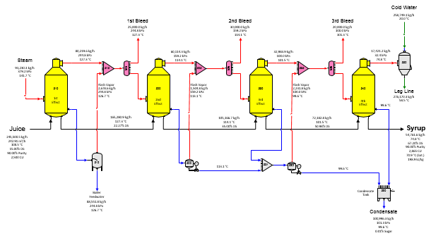
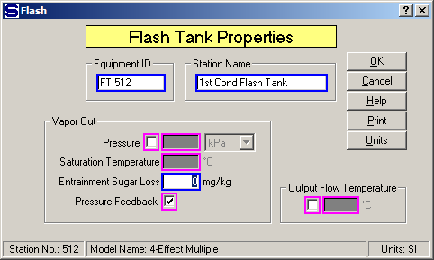

The flow diagram for a model of a four-effect multiple-effect evaporator station is shown in the above diagram. Juice flows into the 1st effect (station no. 510) and syrup leaves from the 4th effect (station no. 540). Steam also flows into the 1st effect and condensate from the 1st effect goes to a flash tank for flashing to 1st vapor before leaving the flow diagram (normally, for boiler feed), while condensates from the 2nd and 3rd effects are flashed to the vapor out of their respective bodies. Residual condensates from the 2nd and 3rd effects, and the 4th effect condensate, are combined (in tank station no. 590) and they flow out of the flow diagram. Receiver station models are used to combine the vapor from each effect with the flash vapor from the condensate flash tanks. The vapor flow from each receiver is sent to a distributor station that allows for bleed vapor flows if needed. Bleed vapors can be specified for the first, second and third vapors and specified quantities have been given for the first (25,000 kg/h), second (30,000 kg/h) and third (20,000 kg/h) vapors in this example.
Each effect in this example uses the heat transfer coefficient and heating surface area to specify how much heat is transferred from the steam, or vapor to the juice. It is not necessary to know the temperatures and/or pressures in the multiple-effects when the heat transfer coefficient is used, and as revisions are made in the model, the vapor temperatures, and pressures, will change as the bleed demands change.
The input parameters for the flash tank stations (numbers 512, 522 and 532) have been specified to use pressure feedback for the pressure of the output flow and the vapor out (see Flash Tank Properties window below). Pressure feedback is used because the flash tank stations will be given vapor pressure values from the receiver stations (nos. 515, 525 and 535). These pressure values come from the pressures of other vapors that flow into the receivers (that is, from previous effects) and the pressure values for the flash tank vapors are derived from the receivers that feedback their pressures to the flash tanks. This feature in Sugars is called pressure feedback, and it can be used for any flash tank with a vapor flow out that flashes to a receiver station that has another input flow with a known pressure value. Note the small "P" on these flow lines in the flow diagram.

The effect on the steam demand for the multiple-effect evaporator due to additional bleed vapors, thin juice quantity, heat transfer coefficient, heating surface, supply steam temperature, etc can be evaluated easily by simply changing the appropriate values in the input windows and then redoing the balance calculations. Scaling in the evaporator bodies can be evaluated by simply lowering the heat transfer coefficients for each effect in proportion to the amount of scaling.
If additional condensates from other sections of the factory are available for flashing, the condensates can be entered as external flows to the receiver stations that precede the flash tanks. Also, changing the flash tanks to flash their vapors to different effects can be evaluated to see whether the steam consumed by the multiple will increase, or decrease.